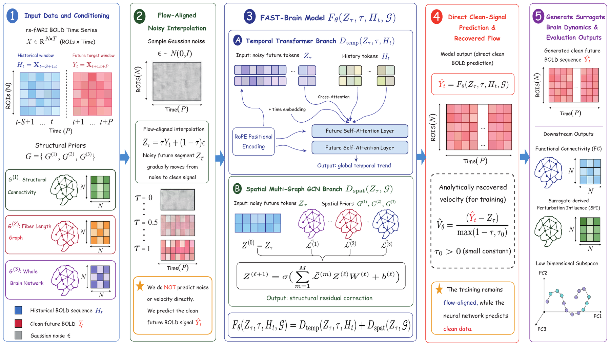
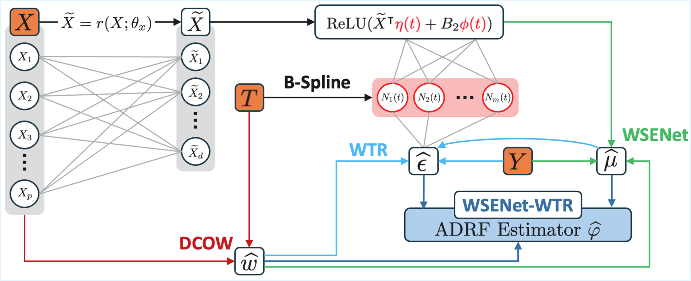
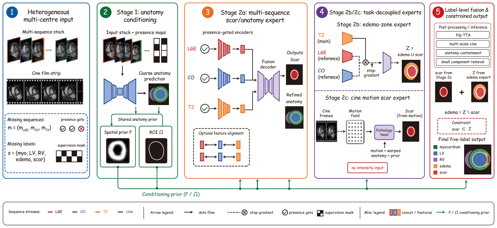
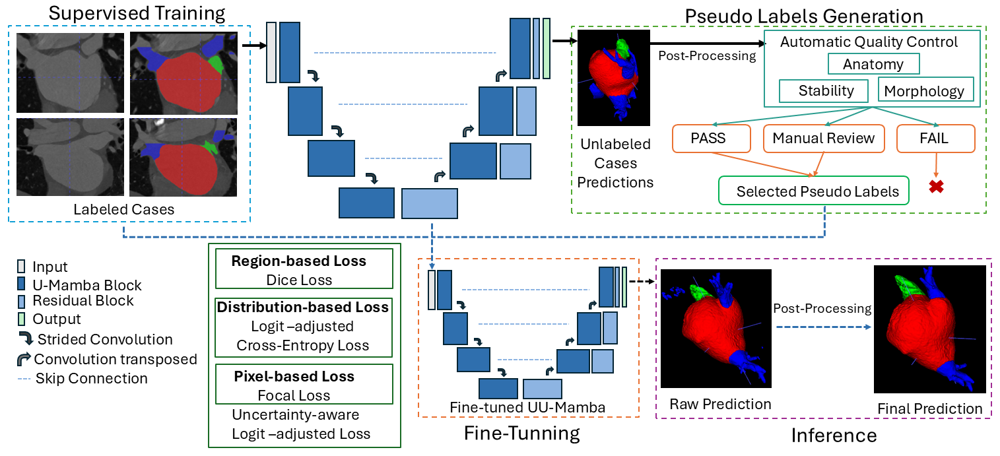

Publications
First-author papers are highlighted. Click a figure to enlarge.

click to enlarge
|
FAST-Brain: A Flow-Aligned Spatio-Temporal Surrogate Brain Model
Shucheng Liu,
Chengchun Shi,
Kai Zhang,
Hongtu Zhu
NeurIPS 2026
A flow-matching surrogate for rs-fMRI dynamics that regresses the clean signal instead of noise or velocity, so approximation error scales with the intrinsic rather than the ambient dimension. A history-conditioned Transformer is paired with a multi-graph GCN that fuses three anatomical priors through a learnable Laplacian polynomial.
|

click to enlarge
|
Weighted Spline-Expanded Networks with Distributional Balancing for Continuous Treatment Effects
Shucheng Liu,
Chan Park,
Guanhua Chen
Under review
Model-free deconfounding for continuous treatments through distance-covariance balancing weights instead of a propensity score, combined with a spline-expanded dose-response network and an influence-function-based weighted targeted regularization that makes the estimator doubly robust. Best integrated RMSE on IHDP, News and TCGA with up to 4,000 covariates.
|

click to enlarge
|
MoSAIC: Motion and Supervision-Aware Inference for Myocardial Scar and Edema Segmentation
Shucheng Liu,
Mingcheng Hu,
Liangqiao Gui,
Yineng Chen,
Peng Huang,
Hui Guo,
Shu Hu,
Xin Wang,
Hongtu Zhu
MICCAI CARE 2026 (Oral, top 10%)
Modality presence gates and supervision masking pool ragged multi-center cohorts with missing sequences and labels into a single model; a cine branch reads scar from motion alone, with no intensity input.
|

click to enlarge
|
Progressive Optimization of UU-Mamba for Left Atrial Multi-Structure Segmentation in CT
Yineng Chen,
Liangqiao Gui,
Shucheng Liu,
Mingcheng Hu,
Peng Huang,
Hui Guo,
Shu Hu,
Hongtu Zhu,
Xin Wang
MICCAI CARE 2026
Logit-adjusted cross-entropy and an automated pseudo-label quality-control pipeline (anatomy, stability, morphology) lift mean Dice from 0.880 to 0.930.
|